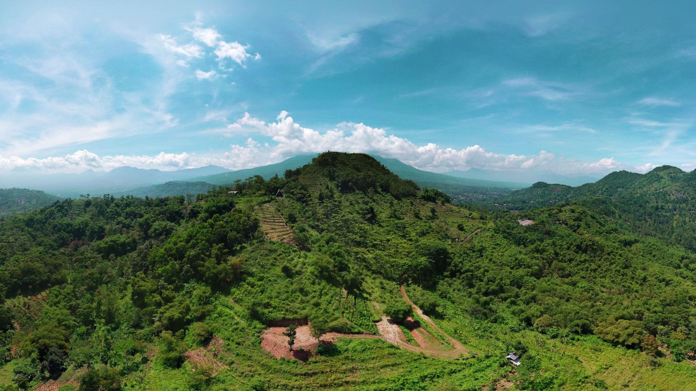
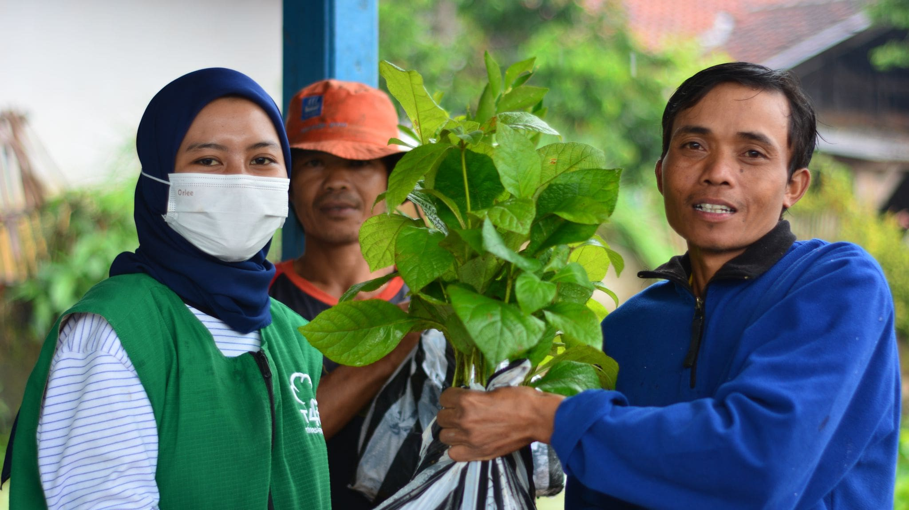

Mari bersama-sama menanam lebih banyak pohon dan menyebarkan tanaman hijau untuk membuat Bumi menjadi tempat tinggal yang lebih baik.

Kehutanan Masyarakat
Membantu lingkungan dan menjaga keamanan petani kami adalah prioritas utama

Kehutanan Masyarakat
Membantu lingkungan dengan membantu masyarakat untuk membantu diri mereka sendiri
Menanam sebuah pohon! Mudah…
Hutan kemasyarakatan diakui sebagai salah satu strategi kunci dalam mempromosikan pengelolaan hutan lestari.
Sumbangan $1 menanam pohon yang sehat di hutan masyarakat. Pohon Anda akan menyerap CO2 dari atmosfer dan membantu meningkatkan mata pencaharian petani subsisten dan keluarga mereka di komunitas lokal.Kami menanam pohon Anda dan memverifikasi bahwa pohon itu hidup dan sehat sebelum mengajukan sumbangan Anda. Anda dapat melihat pohon Anda dengan mengunjungi peta WIN kami. Lihat beberapa pohon yang telah kami tanam.
Trees4Trees™ adalah yayasan nirlaba yang berfokus pada pembaruan lingkungan dan pemberdayaan masyarakat lokal melalui reboisasi dan pendidikan. Kami adalah organisasi yang bergerak dalam kegiatan "Penanaman Pohon", oleh karena itu Anda dapat "Menyumbang Pohon". Kami juga tergabung dalam "Community Forestry | Reboisasi" untuk menjaga bumi bersama agar tetap lestari.
Kehutanan Masyarakat
"Beri seseorang ikan dan dia akan makan selama sehari, ajari dia cara memancing dan dia akan makan seumur hidup ..."
Pepatah lama ini menjadi inti dari Trees4Trees dan Hutan Kemasyarakatan adalah cara kami mencapainya.
"Menanam pohon adalah tindakan kecil yang berdampak besar.
Menyumbangkan pohon panted hanya membutuhkan waktu dua menit dan akan mengurangi CO2 di udara sekitar seperempat ton dan akan membantu keluarga petani lokal memulai hutan kemasyarakatan